R/pagePlotPlace.R
pagePlotPlace.RdPlace a plot that has been previously created but not drawn
pagePlotPlace(
plot,
x = NULL,
y = NULL,
width = NULL,
height = NULL,
just = c("left", "top"),
default.units = "inches",
draw = TRUE,
params = NULL
)Plot object to be placed, defined by the output of a plotgardener plotting function.
A numeric or unit object specifying plot x-location.
A numeric, unit object, or character containing a "b" combined with a numeric value specifying plot y-location. The character value will place the plot y relative to the bottom of the most recently plotted plot according to the units of the plotgardener page.
A numeric or unit object specifying plot width.
A numeric or unit object specifying plot height.
Justification of plot relative to its (x, y) location.
If there are two values, the first value specifies horizontal
justification and the second value specifies vertical justification.
Possible string values are: "left", "right",
"centre", "center", "bottom", and "top".
Default value is just = c("left", "top").
A string indicating the default units to use
if x, y, width, or height are only
given as numerics. Default value is default.units = "inches".
A logical value indicating whether graphics output
should be produced. Default value is draw = TRUE.
An optional pgParams object containing relevant function parameters.
Function will update dimensions of an input plot and return an updated plot object.
## Load Hi-C data
library(plotgardenerData)
data("IMR90_HiC_10kb")
## Create, but do not plot, square Hi-C plot
hicPlot <- plotHicSquare(
data = IMR90_HiC_10kb, resolution = 10000,
zrange = c(0, 70),
chrom = "chr21",
chromstart = 28000000, chromend = 30300000,
draw = FALSE
)
#> Read in dataframe. Assuming 'chrom' in column1 and 'altchrom' in column2. 10000 BP resolution detected.
#> hicSquare[hicSquare1]
## Create page
pageCreate(width = 3.75, height = 3.5, default.units = "inches")
## Place Hi-C plot on page
pagePlotPlace(
plot = hicPlot,
x = 0.25, y = 0.25, width = 3, height = 3,
just = c("left", "top"),
default.units = "inches", draw = TRUE
)
#> hicSquare[hicSquare1]
## Annotate heatmap legend
annoHeatmapLegend(
plot = hicPlot,
x = 3.4, y = 0.25, width = 0.12, height = 1.2,
just = c("left", "top"), default.units = "inches"
)
#> heatmapLegend[heatmapLegend1]
## Hide page guides
pageGuideHide()
